Street photography always wears the mask of "chance": a red umbrella that suddenly enters a rainy reflection, the swaying shadow of a tree on a wall at dusk, the 0.3-second glance back on a subway platform. These frames are called the "decisive moment." In fact, they are a precise match between the photographer and the city. Photographers measure reality with the viewfinder and rebuild the disordered street into a visual script.
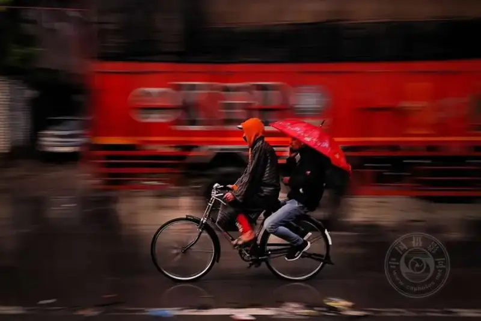
▲ ©SHEIKH HUZAIF
Great street photographers are invisible architects of order.
They know well that the real magic is not in the lens, but in the eye behind it.
When others see clutter, they see the tracks where leading lines cut through time and space.
When others ignore empty space, they catch the emotion that moves within negative space.
When others wait for perfection, they use the golden section to tame the most rebellious light and shadow.
These 30 photos are 30 ways to declare how to tame randomness:
▸ A lonely silhouette in a symmetric frame is a gentle reply to the coldness of the city.
▸ A busy market inside a framed view hides an observer's gaze that goes deeper than the lens.
▸ A bicycle wheel frozen in motion blur stages a philosophical argument between time and speed.
Open them, and you will read this:
The ultimate appeal of street photography is not to record life. It is to reinvent the grammar of life.
With millimeter-level arrangement of elements, it turns a fleeting moment into the eternal.
With a 0.1-second sense of timing, it makes an ordinary scene burst with poetry.
"Are you ready to see the street again with a compositional eye?"

▲ ©Stefano Lista

▲ ©Yaghoub Hozori

▲ ©Andreas Jorgensen

▲ ©Anna Biret

▲ ©Gabi Ben Avraham

▲ ©Yusuf Duyar

▲ ©Ilker Karaman
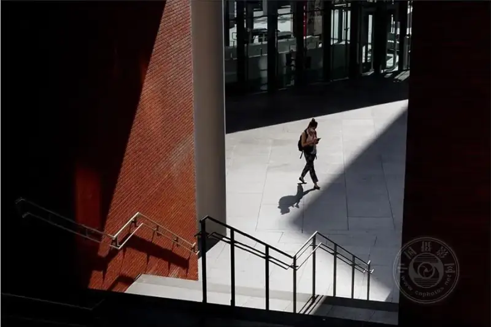
▲ ©Jonathan Murillo
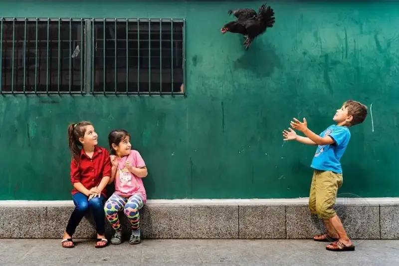
▲ ©Reyhan Turk
▲ ©Somnath Mullick
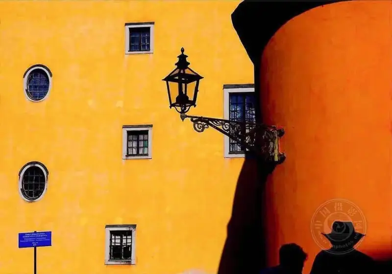
▲ ©Andreas Jorgensen

▲ ©SHEIKH HUZAIF
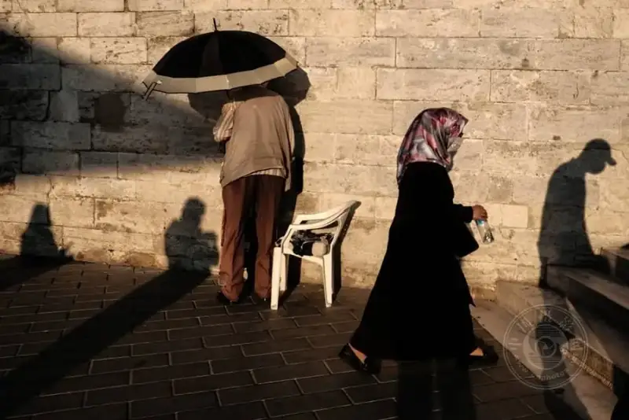
▲ ©Emir Sevim
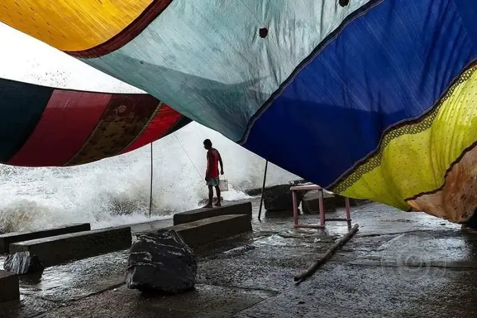
▲ ©Debrani Das

▲ ©Prima Mareti

▲ ©Claude Renault
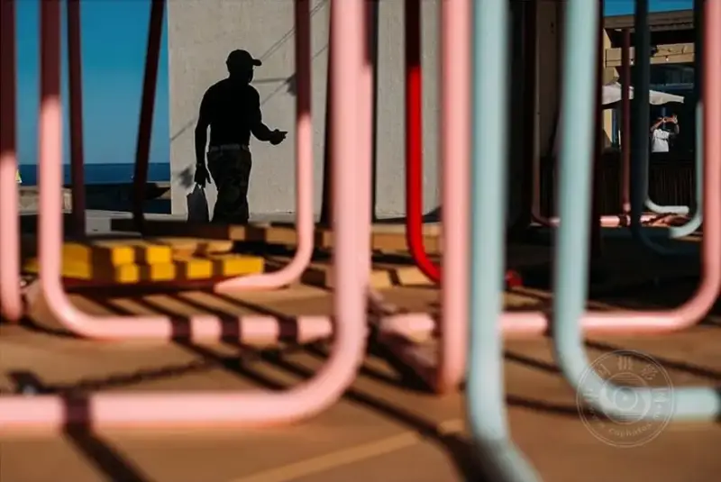
▲ ©Alfredo Carmona

▲ ©Dan Morris

▲ ©Chris Tuarissa

▲ ©Craig Reilly
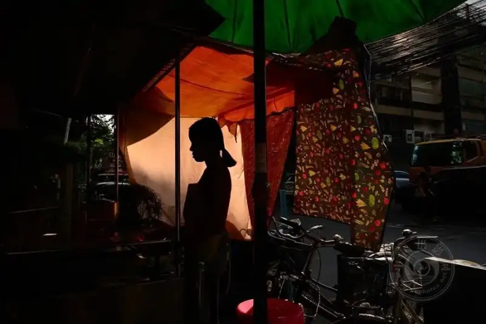
▲ ©Anna Biret

▲ ©Ilker Karaman
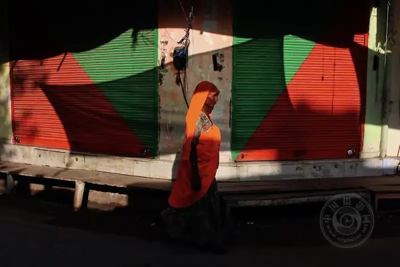
▲ ©Aniruddha Guha Sarkar

▲ ©Apolo Sales
▲ ©Maciej Dakowicz

▲ ©Joaquín Luna
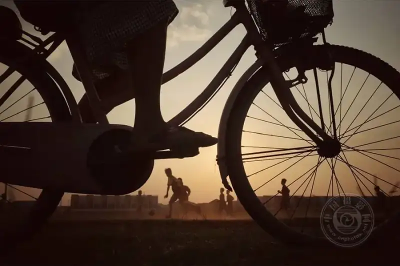
▲ ©Dah Bagus
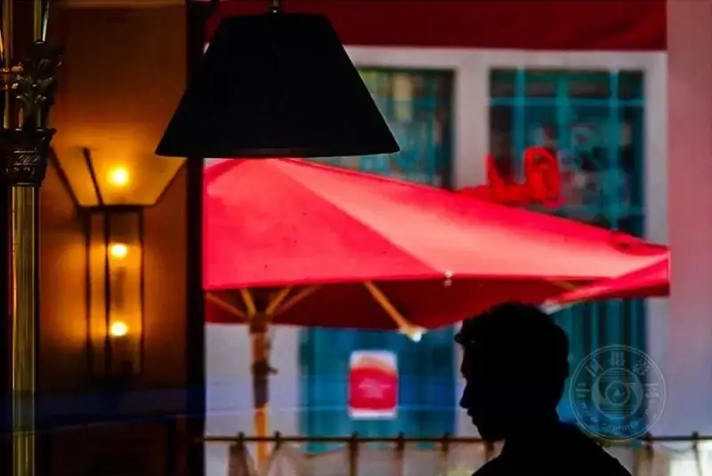
▲ ©VIncen
▲ ©Çağdaş Kul
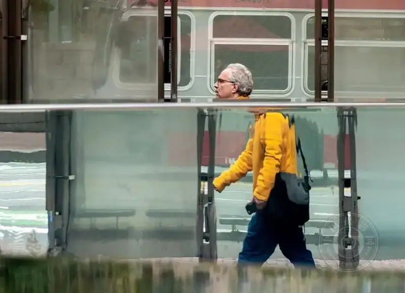
▲ ©Eric Davidove